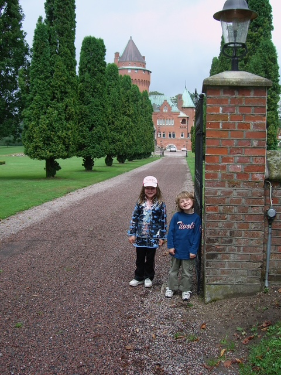
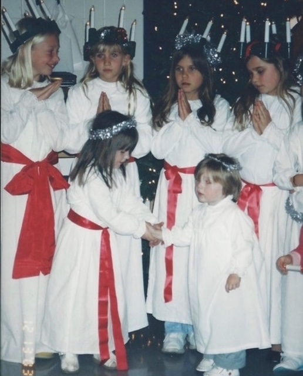

My mother was born in Sweden and immigrated to the United States when she was just 17 years old. In order to preserve some Swedish tradition within our family, my mother taught me how to speak Swedish, which I am still fluent in to this day. My family used to travel to Sweden every summer when I was a kid, and I have many fond memories of being there! My sister and I would also perform "Lucia" with other Swedish children every December, as it is an important tradition in Swedish culture.
